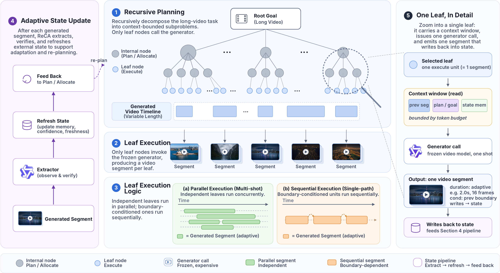

A cinematic unit in the final long video. The system chooses its goal, duration, boundary condition, and preserved state.
Recursive Context Allocation
ReCA: multi-shot video extrapolation with coherent long-range state.
ReCA expands multiple visual anchors into a long, multi-shot continuation while preserving identity, scene state, object relations, and event causality across the generated sequence.
Capability Chapters
ReCA decomposes multi-shot video extrapolation into context-bounded shot jobs.
The method keeps task state outside the frozen video generator, plans the long continuation as a tree of shots, allocates a per-shot context window to each leaf, and writes the tail frame back into state so the next leaf can pick up where the last one left off.
Terminology
Shot, segment, and parallel execution.
ReCA separates the movie timeline from the short-video calls that render it, then decides which units need a boundary handoff and which can run at the same time.
An executable leaf call to the frozen short-video generator. A long shot can be divided into several budgeted segments.
Parallelism is at the shot level: shots whose anchor frames are independent render together through the frozen generator. Segments inside a single shot stay serial — each segment's first frame is the previous segment's tail.

Root-to-shot recursive planning
Starting from multiple visual anchors and narrative intent, ReCA builds a shot schedule with semantic goals, durations, boundary conditions, and dependency links. The schedule keeps each generator call inside prompt and duration budgets instead of sending the whole story at once.
Local-global context allocation
Each shot receives a compact context slice — character / location identity references, the anchor frame, and the most recent state-memory entries — packed into a per-shot system message. The planner never sees the whole movie at once, so per-call token budgets stay bounded.
Shot-level parallel rendering
Once contexts are assigned, each shot is an independent leaf job: render the anchor frame first, then walk its segments serially — each segment's first frame is the previous segment's tail.
Shot Preview / Timeline
Shot Preview Plan for the 18-shot Heavenly Titans sequence.
The sequence expands a single duel into cloud combat, titan-scale transformations, and a final standoff while keeping the same characters, weapons, and action state readable.
Featured ReCA Cases
Multi-shot continuations across landmarks, action, food, and dialogue.
Each case starts from a compact visual premise and asks the model to carry long-range state through several camera changes, scene transitions, and narrative beats.
Model Performance / Compare
Framework comparison on multi-anchor video extrapolation.
ReCA is compared with VGoT, Mora, and MovieAgent on identity consistency, scene handoff, object-state continuity, and narrative causality across long generated sequences.